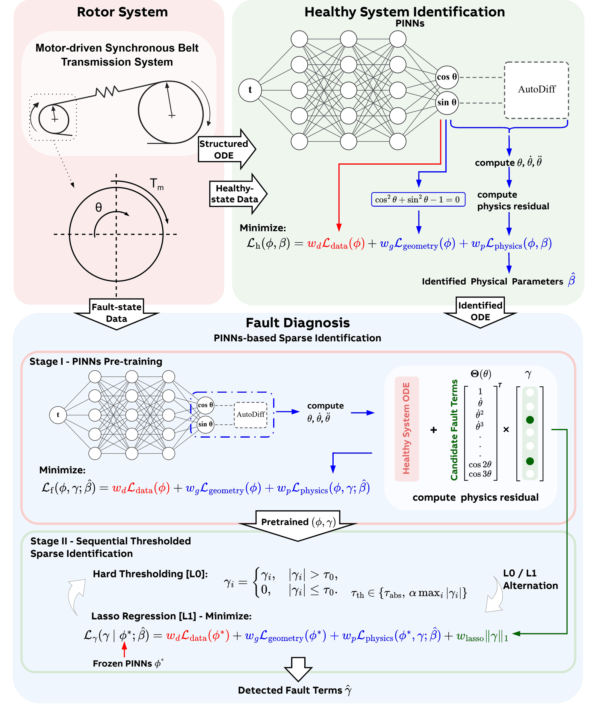
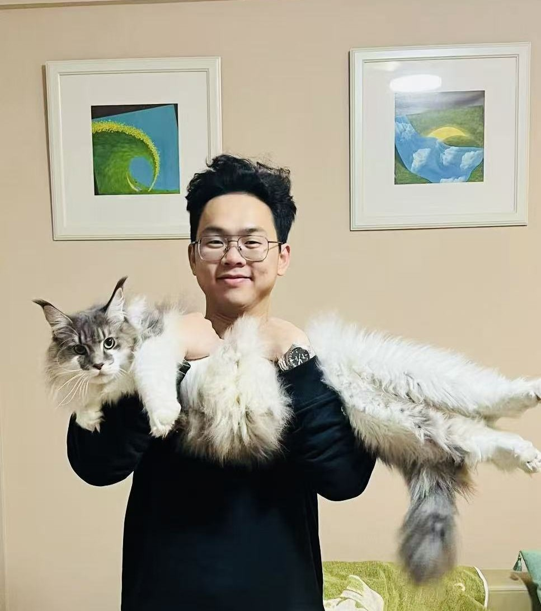
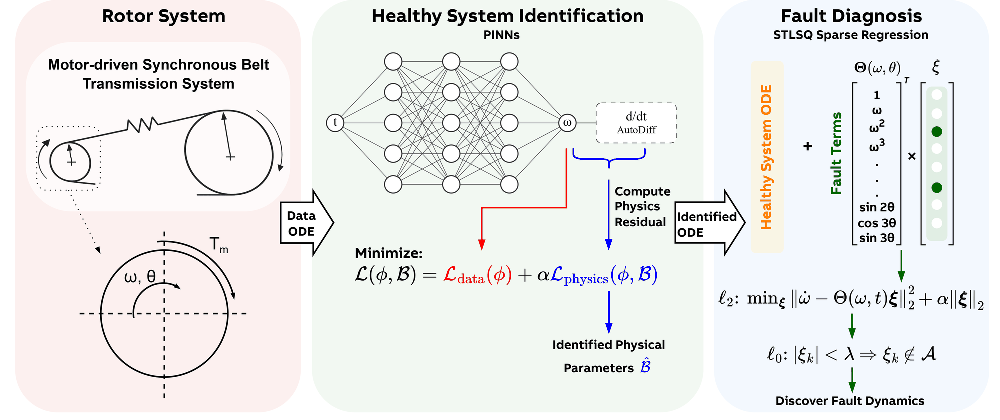
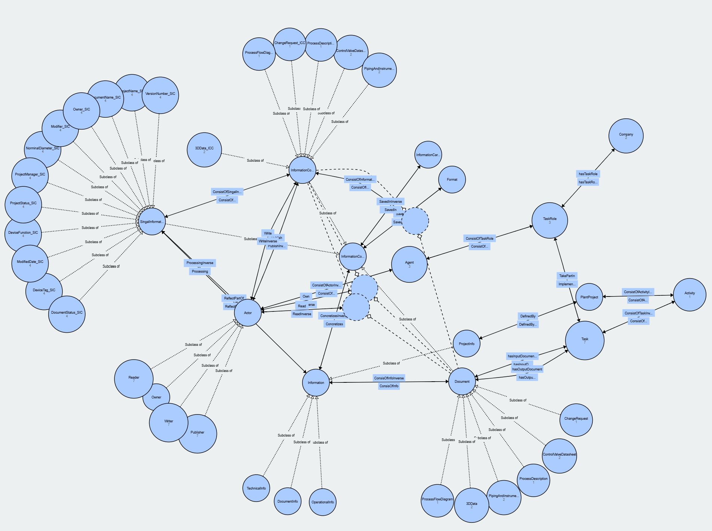

From Encoder to Fault: Physics-Informed Sparse Identification for PMSM Belt Drive Diagnostics
C. Shen, B. Li, J. Weissbacher, A. Steinert, Z. Mbikayi, C. Song
IEEE Transactions on Industrial Electronics Under review

I have completed my M.Sc. in Aerospace at the Technical University of Munich (TUM), following a B.Eng. in Automotive Engineering at Wuhan University of Technology. My path has taken me from Formula Student race-car development and CubeSat systems engineering to industrial fault diagnosis and engineering knowledge modeling. Across these different settings, I have found that I particularly enjoy making sense of complex engineering systems: understanding how their parts interact and finding useful ways to model their behavior.
In my master’s thesis at ABB Corporate Research and TUM’s Institute of Flight System Dynamics, I combined physics-informed neural networks with sparse identification for interpretable fault diagnosis. As a research assistant at TUM’s Institute of Automation and Information Systems, I explored ontology-based methods for representing and connecting information across engineering documents. These experiences shape my research interests in combining physical models, measured data, and engineering knowledge to better understand complex systems and support engineering decisions.

C. Shen, B. Li, J. Weissbacher, A. Steinert, Z. Mbikayi, C. Song
IEEE Transactions on Industrial Electronics Under review

C. Shen, J. Weissbacher, C. Song
International Conference on Electrical Machines (ICEM), 2026, pp. 1–8 Published

Y. Wang, C. Shen, J. Alterbaum, B. Chen, T. Kleinert, B. Vogel-Heuser
IECON 2026 Accepted